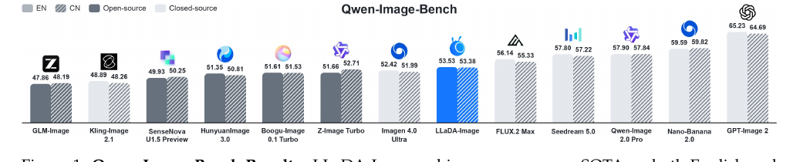
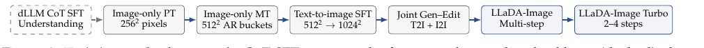
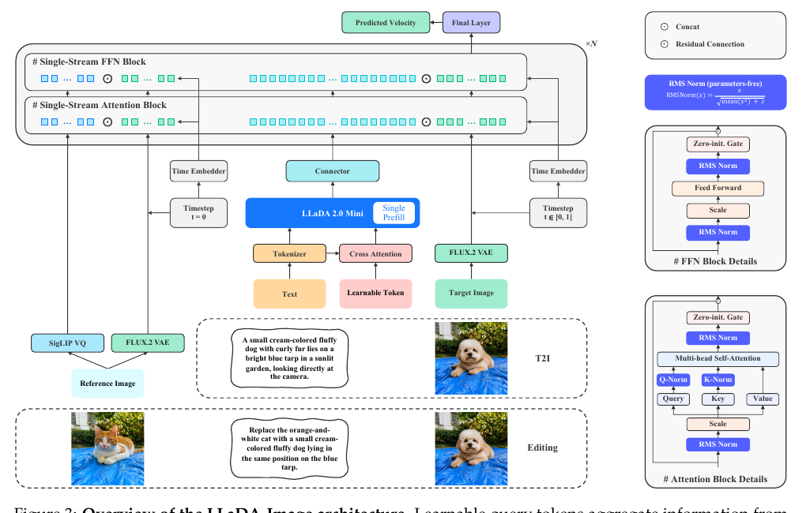
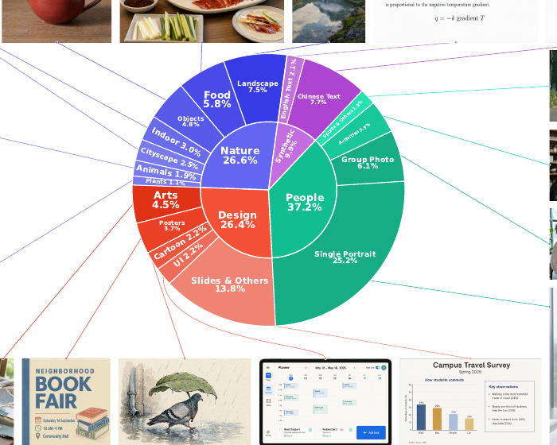

LLaDA-Image：用完全开源配方从零训一个 6B 强图像生成器

目标
不是只追生成质量，而是回答一个系统问题：在"可获取的数据预算 + 稳定的大规模训练 + 高效部署"三重约束下，从零训一个强图像生成器要付出什么代价？并把配方完全开源。
数据
220M 生成训练样本，98% 真图；其中 90%+ 是无 caption 的 image-only 数据用于预训练/中训练；配对 image-text 只进入后段 SFT，且真图占比全程 >70%。
方法
冻结的 dLLM 版 VLM（LLaDA2.0-Mini）当理解后端 + RQA/Connector 桥接 + 单流 DiT 做 flow-matching；编辑走绕过 VLM 的参考图双通道。
系统
DiT 全程无参数 RMSNorm + Muon 优化器；序列 bin-packing + 分块扩散；宽高比分桶变分辨率；checkpoint 合并抑制震荡；TwinFlow 蒸馏到 2–4 步。
术语速查
这篇报告的缩写密度很高，先一句话一个：
| 术语 | 一句话解释 |
|---|---|
| DiT | Diffusion Transformer，用 Transformer（而非 U-Net）做扩散/流匹配的主干；本文是"单流"的——图像 token 和条件 token 在同一套 block 里联合注意力。 |
| dLLM | 扩散语言模型（diffusion LLM）。不是自回归逐 token 生成，而是像扩散一样"从全 [MASK] 迭代去噪出文本"。本文的理解后端 LLaDA2.0-Mini 就是 dLLM。 |
| VLM | 视觉-语言模型。这里指基于 dLLM 的多模态理解模块，负责把文本指令（和可选图像）编码成生成条件。 |
| RQA | Residual Query Adapter，残差查询适配器。一组可学习 query token 去 cross-attend 输入序列，抽出"对生成有用"的信息，再拼回原序列喂给冻结 VLM。 |
| Connector | 一个浅层 Transformer，把 VLM 的隐状态投影/对齐到 DiT 的条件空间。 |
| SigLIP-VQ | 带向量量化的 SigLIP 视觉编码器，本文既做 VLM 的视觉输入，也在编辑时抽参考图的语义特征。 |
| VAE | 变分自编码器，图像↔latent 的压缩器。本文用 FLUX.2 VAE。 |
| Flow Matching | 流匹配。学一个把噪声直线插值到数据的"速度场"，训练目标是回归 \(z-x\)。 |
| RMSNorm | 只按均方根归一化、去掉均值中心化的 Norm；"无参数"= 连缩放增益 \(\gamma\) 都不学。 |
| Muon | 一种对权重矩阵做正交化/谱归一更新的优化器，近来在大模型训练里以稳定著称。 |
| DMD / DMD2 | Distribution Matching Distillation，用真/假 score 之差匹配分布，把多步模型蒸成少步。 |
| TwinFlow | 本文用的蒸馏法：用同一个 DiT 的正时间/负时间两个"角色"分别当生成器和假 score，省掉独立的假 score 网络。 |
| CoT SFT | Chain-of-Thought 监督微调，先把理解后端的"边想边答"能力练好。 |
| T2I / I2I | 文生图 / 图生图（编辑）。 |
1. 出发点 (Motivation)
主流文生图配方（Stable Diffusion、SD3 那一系）从第一步就把"学视觉先验"和"学语言对齐"耦在一起——最耗算力的早期训练阶段就需要配对 caption。这带来一串环环相扣的瓶颈：
- Caption 又贵又有损。 人写贵、模型写会幻觉；更要命的是分辨率错配：caption 描述的是整张图，训练要把整图降采样到低分辨率（如 \(256^2\)），caption 里提的细节可能降采样后就没了，于是"图-文不一致"。
- 合成数据是把双刃剑。 合成 image-text 对能加速早期收敛，但合成占比一高，artifact 会被继承，长期真实感受限。
- 统一模型还要接两头。 一个统一模型既要把"多模态理解"接到"生成"，编辑时还要保住参考图证据；部署又要求把长扩散轨迹压短而不掉质量。
作者的判断是：这些必须协同设计（监督信号 + 架构 + 训练管线 + 蒸馏），单点优化解决不了。于是提出三条与主流相反的赌注：
- 把视觉先验学习和语言对齐解耦——先用 image-only 数据学先验，语言对齐推迟到后段 SFT（i1-2026 恰好相反，靠纯合成 caption 从头训，是很好的对照）。
- 真图为主——明知早期 benchmark 涨得慢，也押注"更高的真实感天花板"。
- 用扩散语言模型（dLLM）当理解后端——在一片"自回归 VLM / T5 文本编码器"里是个异类。
这篇属于"技术报告 / 系统论文"。 它的价值不在某一个新公式，而在一整套可复现的工程决策 + 每个决策背后的"为什么"。所以下面 §2 用"决策日志 + 关键公式"来读，§4 单独拉一条系统/工程线。
2. 方法 (Model Design)

2.0 消融决策表（读这一节就够拿到主干）
| 组件 | 起点/常规做法 | 本文选择 | 为什么 |
|---|---|---|---|
| 早期监督信号 | 配对 image-text（caption） | image-only 自条件（Recipe #3） | caption 贵且和降采样后的图不一致；图里本就含有监督它自己所需的语义，冻结 VLM 抠出来当条件即可 |
| 数据真/合成比 | 合成为主，早期收敛快 | 真图 >70%（PT/MT 100% 真图）（Recipe #2/#4） | 合成早期快但传染 artifact；真图收敛慢但真实感天花板更高 |
| DiT 归一化 | LayerNorm / 带参数 Norm | 全程无参数 RMSNorm（Recipe #1） | 长训练地平线上显著更稳；去掉可学增益减少一处漂移源 |
| 优化器 | AdamW | Muon（生成全阶段） | 谱/正交化更新，稳住大规模训练 |
| 条件流 | 双流 MMDiT（图/文各一路） | 单流 DiT（图文 token 同栈联合注意力） | 让语义在每一层都能直接影响像素合成，主干更同质简单 |
| 理解后端 | 自回归 VLM / T5 文本编码器 | dLLM 版 VLM（LLaDA2.0-Mini） | 统一多模态理解，且能在 image-only 阶段消费视觉 token |
| 编辑参考图注入 | 进 VLM 一起理解 | 绕过 VLM，直接进 DiT（语义+像素双通道） | 保住 VLM 通用理解；干净 VAE latent 提供未改区域的原生像素证据 |
| 时间步采样 | 均匀 \(U(0,1)\) | logit-normal（\(P_{mean}=P_{std}=0.8\)） | 把更多监督预算投到高噪声（早期去噪）——那里最敏感、错误会沿轨迹传播 |
| 少步部署 | 独立训练一个少步模型 | TwinFlow 蒸馏（共享 DiT 正/负时间双头） | 不引入独立假 score 网络，推理时丢掉假 score 头零开销 |
| 收敛后选点 | 选单个最优 checkpoint | 多邻近 checkpoint 权重平均 | 抑制采样噪声导致的分数震荡，更鲁棒 |
2.1 三段式架构与"单流"DiT

整个前向可以写成一条嵌套式子（论文 Eq. 5）：
—— 翻译: 从里到外读——先把可学 query $q_0$ 和输入条件 $c$ 送进 RQA $q_\psi$ 抽出残差 query，拼回 $c$ 后过冻结 VLM $g$ 做一次 prefill，再用 Connector $c_\phi$ 投影成条件 $h_{cond}$；最后 DiT $F_\theta$ 在噪声 latent $x_t$、时间 $t$、条件 $h_{cond}$ 下预测流匹配速度 $\hat v_t$。四个字母就是四个模块的串联。
为什么要 RQA？ 冻结的 VLM 不会主动把"生成需要的细粒度视觉先验"暴露出来。RQA 的做法是让一组 query 先去 cross-attend 全部多模态输入（Eq. 2 \(q_{res}=q_\psi(q_0,c)\)），把结果追加到输入序列末尾（而不是替换），再让冻结 VLM 一次 prefill（Eq. 3）——相当于用一段可学的"提示后缀"去撬动冻结 VLM 吐出对生成最有用的隐状态。全程 VLM 参数不动，只训 RQA、Connector、DiT。
"单流"的含义：与 MMDiT 那种"图一路、文一路、各自有独立权重"不同，本文把图像 token 和条件 token 拼成一条序列，同一套 block 的联合自注意力处理。好处是语义能在每一层直接影响像素演化，主干保持同质简单。
2.2 image-only 预训练：从"待生成的那块图"里自造条件
这是全篇最反常识的一步（Recipe #3）。核心观察：一张图本身就含有监督它自己生成所需的高层语义。于是训练时：
- 从源图随机裁一块 native 分辨率约 \(256^2\)（或略大）的区域，只做轻微降采样到 \(256^2\)——因为条件来自这块裁图自己，不存在"整图降采样丢 caption 细节"的问题，反而能喂进多得多的局部细节。
- 用冻结 SigLIP-VQ 把这块图编码成 patch 特征 \(c_{img}=v(y)\in\mathbb{R}^{N\times D}\)，配一句固定辅助 prompt（"Generate an image identical to the reference image"）。
- 关键：掩码自条件。 若把全部图像特征都给它，等于泄露了几乎完整的重建目标，模型会学到平凡的恒等映射。所以按比例 \(\rho_{img}\) 随机 mask 掉一部分（Eq. 9）：
—— 翻译: $m\in\{0,1\}^N$ 是保留概率 $1-\rho_{img}$ 的二值掩码。留下一部分可见 patch、遮掉其余，任务就从"稠密重建"变成"稀疏→稠密预测"：模型必须从可见 patch 推断缺失内容，被逼着学上下文与构图结构，而不是抄答案。
生成器用流匹配训练（Eq. 10）。对高斯噪声 \(z\)、\(t\sim U(0,1)\)，构造插值 \(x_t=(1-t)x+tz\)，回归常速度场：
—— 翻译: 目标速度是 $z-x$（从数据指向噪声的直线方向）。这一步只更新 DiT $F_\theta$、RQA $q_\psi$、Connector $c_\phi$；VLM $g$ 和视觉编码器 $v$ 全程冻结。于是"廉价的 image-only 数据"就被吸收成了视觉先验。
中训练（MT）沿用同样的 image-only 公式，只把像素预算从 \(256^2\) 提到 \(512^2\)，并引入宽高比分桶。它是一座"桥"：先只改分辨率（条件仍来自图自身），到 SFT 再只改监督来源（换成文本）——避免"分辨率+监督来源"同时突变。
2.3 编辑：让参考图绕过 VLM，走语义+像素双旁路
编辑是这套架构最巧的地方——参考图故意不进 VLM（否则会污染 VLM 的通用理解），而是开两条直达 DiT 的旁路：
① 语义旁路（Eq. 6）：SigLIP-VQ 抽参考图语义 \(f_{ref}=v(y_{ref})\)，过一个 DiT 专用分支 \(b_\omega\)（一个 embedder + 两层 Transformer）得 \(h_{ref}\)，与文本条件拼成联合条件 \(h_{joint}=\text{concat}(h_{cond}, h_{ref})\)。
② 像素旁路（Eq. 8）：光有语义留不住未改区域的低层外观。所以再用 FLUX.2 VAE 把干净参考图编码成 latent，与噪声目标 latent 在通道上拼接后进 DiT：
—— 翻译: 语义旁路告诉模型"参考图讲了什么"，像素旁路直接把"不该改的区域长什么样"的原生像素塞进去。两者互补，让身份、结构、纹理、背景一致性都稳住——而且没有引入独立的编辑专用主干，一个 checkpoint 通吃 T2I+编辑。
代码里这一步有个漂亮的实现：干净参考 latent 的时间步被强制设成 0，和噪声目标 latent（时间步 \(t\)）逐 token 用不同的 AdaLN 调制（详见 §4.2）。
2.4 TwinFlow：一个 DiT 用正负时间当两个角色
要把 50 步的 Base 蒸成 2–4 步，本文用 TwinFlow（建立在 DMD2 上）。DMD2 需要一个在线假 score 模型去追学生分布，通常得多养一个网络。TwinFlow 的技巧是用同一个 DiT 的时间符号当角色开关：正时间 \(+t\in[0,1]\) 训生成器，负时间 \(-t\in[-1,0]\) 训假 score。
一步从噪声到数据的映射（Eq. 12）：\(\hat{x}=z-F_\theta(z,+1,h_{cond})\)。假 score 分支用 detach 后的 \(\hat x\) 重新加噪训练（Eq. 13–14），分布匹配的 DMD 目标（Eq. 16）：
—— 翻译: $s_{real}$ 来自冻结的原始模型 $F_{base}$（在 $+t$），$s_{fake}$ 来自被蒸的 $F_\theta$（在 $-t$）。用两者 score 之差（stop-gradient）去推学生样本 $\hat x_t$，只更新正时间的生成器；负时间分支由 Eq. 14 单独更新。交替优化 = 在一个模型里实现 DMD。
三个工程细节：① 借 DuMo 的"一进双出"给共享 DiT 挂两个输出头（假 score 头 / DMD 头），推理只留 DMD 头、零额外开销；② 用4 步反向仿真对齐学生推理轨迹；③ 生成器:假 score 更新按 1:2（比 DMD2 的 1:5 省），蒸完再用 TBSM 做 RL 微调。
3. 结果 (Results)
主战场 Qwen-Image-Bench（1000 条分层 prompt，测质量/美学/对齐/真实感/创意五维，中英双轨）：
- LLaDA-Image 综合 53.53 (EN) / 53.38 (CN)，开源双轨第一，分别超次优开源 Z-Image Turbo 1.87 / 0.67 分（无 prompt 增强、无 test-time thinking）。
- 在开源阵营的 Quality、Aesthetics、Alignment 三维两语种都排第一；EN 的 Creative 也第一。
- 已超过闭源 Imagen 4.0 Ultra (52.42)、逼近 FLUX.2 Max (56.14)；但距 GPT-Image 2 (65.23) 仍有约 12 分的实打实差距——报告没有回避这一点。
- Turbo（4 步）综合 50.98 (EN)/50.27 (CN)，比 Base 掉约 2.5–3 分，换来 ~12× 步数压缩。
文字渲染：LongText-Bench EN/ZH 0.923 / 0.913，双语差距小（均衡）但低于最强专用文字模型（Qwen-Image 2512 的 0.956/0.965）。CVTG-2K 平均词准 0.875 排第二（仅次于 SenseNova U1.5 Preview 0.887），且随文字区域从 2→5 增多只从 0.892 降到 0.857，稳定性好。
编辑 GEdit-Bench：综合 EN/CN 7.336 / 7.294，单 checkpoint 双语编辑。分项暴露短板：语义一致性(GSC 8.043) 明显强于感知质量(GPQ 7.182)，EN 尤其如此——离专用编辑模型（Qwen-Image-Edit 2511 的 7.877、FireRed 7.943）还有距离。
旧诊断基准（作者明确降权）：GenEval 综合 0.85（单物体 1.00、双物体 0.98、属性绑定 0.84 并列最高，但计数只有 0.53 拉低总分，是明确的组合弱点）；DPG-Bench 87.48。作者直言 GenEval/DPG 已饱和、与人类偏好排序背离，只作历史对照。

4. 实现细节与工程线 (Code Cross-Read)
仓库
inclusionAI/LLaDA-Image目前放出的是模型定义 + 推理 pipeline（transformer_llada_image.py1874 行、pipeline_llada_image.py651 行）；训练代码仓库标注在陆续释放中。以下引用均来自已开源的推理侧代码，逐条对回论文公式。
4.1 Recipe #1 落地：无参数 RMSNorm 铺满整个 DiT
论文说"把 DiT 里每个 Norm 换成无参数 RMSNorm"。代码里 elementwise_affine=False 就是"无参数"——连缩放增益都不学：
repo/src/models/transformer_llada_image.py:L199-L202, L152-L153 — TransformerBlock 的四处 RMSNorm 与 Q/K-Norm 全部无参数
self.attention_norm1 = RMSNorm(dim, eps=norm_eps, elementwise_affine=False)
self.ffn_norm1 = RMSNorm(dim, eps=norm_eps, elementwise_affine=False)
self.attention_norm2 = RMSNorm(dim, eps=norm_eps, elementwise_affine=False)
self.ffn_norm2 = RMSNorm(dim, eps=norm_eps, elementwise_affine=False)
# 注意力里 Q/K 也各挂一个无参数 RMSNorm（qk_norm 稳定注意力 logits）
self.norm_q = RMSNorm(self.head_dim, eps=norm_eps, elementwise_affine=False) if qk_norm else None
self.norm_k = RMSNorm(self.head_dim, eps=norm_eps, elementwise_affine=False) if qk_norm else None
整个文件里 elementwise_affine=False 出现十余次，覆盖 DiT block、QueryFormer、Connector、SigVQ 视觉塔——确实是"铺满"。这印证了报告把它当一等公民的稳定性手段而非小 trick。
4.2 单流 block：sandwich-norm + zero-init tanh 门 + 逐 token 双调制
论文 Fig. 3 右侧的 block 细节（Scale → RMSNorm → 子层 → RMSNorm → zero-init Gate → 残差）在代码里一字不差，且藏着编辑的关键——noise_mask 逐 token 选择"噪声/干净"两套调制：
repo/src/models/transformer_llada_image.py:L228-L251 — TransformerBlock.forward 的调制与残差
if noise_mask is None: # T2I：全序列一套调制
scale_msa, gate_msa, scale_mlp, gate_mlp = \
self.adaLN_modulation(adaln_input).unsqueeze(1).chunk(4, dim=2)
gate_msa, gate_mlp = gate_msa.tanh(), gate_mlp.tanh() # 门用 tanh 压到 (-1,1)
scale_msa, scale_mlp = 1.0 + scale_msa, 1.0 + scale_mlp # scale 以 1 为中心
else: # 编辑：噪声 token 与干净参考 token 各一套
noisy_mod = self.adaLN_modulation(adaln_noisy).chunk(4, dim=1)
clean_mod = self.adaLN_modulation(adaln_clean).chunk(4, dim=1)
scale_msa = _select_per_token(1.0+noisy_mod[0], 1.0+clean_mod[0], noise_mask, seq_len)
gate_msa = _select_per_token(noisy_mod[1].tanh(), clean_mod[1].tanh(), noise_mask, seq_len)
# ... mlp 同理
attention_output = self.attention(self.attention_norm1(hidden_states) * scale_msa, ...)
hidden_states = hidden_states + gate_msa * self.attention_norm2(attention_output)
hidden_states = hidden_states + gate_mlp * self.ffn_norm2(
self.feed_forward(self.ffn_norm1(hidden_states) * scale_mlp))
paper↔code 印证：Eq. 8 说"干净参考 latent 与噪声目标 latent 拼接进 DiT"。代码用 noise_mask 逐 token 判断这个 token 是"噪声目标"还是"干净参考"，分别用时间步 \(t\) 和时间步 \(0\) 生成的调制——这样同一个 block 里，参考 token 表现得像"已经去噪完的干净图"，目标 token 才被真正去噪。这正是主 forward 里 dual_timestep = torch.cat([t, torch.zeros_like(t)])（L634）的来源。
FFN 是标准 SwiGLU（w2(silu(w1 x) * w3 x)，L166-L175），隐藏维 dim/3*8。
4.3 RQA = QueryFormer：256 个可学 query 撬动冻结 VLM
论文 Eq. 2 的 \(q_\psi(q_0,c)\) 就是这个 QueryFormerModel——默认 256 个 meta_queries、单层 cross-attention：
repo/src/models/transformer_llada_image.py:L1338-L1382 — QueryFormer 的可学 query 与前向
self.meta_queries = nn.Parameter(torch.zeros(num_queries, hidden_size)) # q0，默认 256×2048
nn.init.normal_(self.meta_queries, std=1 / math.sqrt(hidden_size))
# ...
def forward(self, inputs_embeds, attention_mask, ...):
query_embeds = self.meta_queries.unsqueeze(0).expand(batch_size, -1, -1)
for query_block in self.query_blocks: # 默认只 1 层
query_embeds = query_block(query_embeds, inputs_embeds, attention_mask) # cross-attend 输入
return LLaDAImageQueryFormerOutput(query_embeds=query_embeds)
4.4 条件编码全链路：RQA → 追加 → 冻结 prefill → Connector
pipeline 侧把 Eq. 2→3→4 串成一条，还有一处论文没细说但很关键的非对称注意力掩码：
repo/src/pipelines/pipeline_llada_image.py:L196-L228 — _encode_text：query 追加 + 冻结 VLM prefill + connector
inputs_embeds = self.text_encoder.get_input_embeddings()(input_ids)
query_embeds = self.queryformer(inputs_embeds, attention_mask).query_embeds # Eq.2
text_length = inputs_embeds.shape[1]
inputs_embeds = torch.cat([inputs_embeds, query_embeds], dim=1) # 追加，非替换
# ...构造 backbone 注意力掩码...
backbone_attention_mask[:, :, :text_length, text_length:] = mask_value # ★关键
hidden_states = self.text_encoder.model(inputs_embeds=inputs_embeds, ...) # Eq.3 冻结 prefill
prompt_embeds = self.text_projection(hidden_states).hidden_states # Eq.4 connector→h_cond
那行 ★关键 是点睛之笔：它让原始文本 token 看不见后面追加的 query token，但 query 能看见文本。于是冻结 VLM 对文本的理解完全不被 query 干扰（保住通用能力），而 query 单向地从文本里"吸"出对生成有用的信息——这正是 RQA "residual/旁挂"设计哲学在注意力层面的体现。
4.5 推理：flow-matching 欧拉 + 标准 CFG
repo/src/pipelines/pipeline_llada_image.py:L603-L624 — 去噪循环与分类器无关引导
latent_model_input = torch.cat([latents, latents], dim=0) if do_cfg else latents
model_output = self.transformer(latent_model_input, timestep, cap_feats, glm_cap_feats,
source_latents=source_latents, ...)
if do_classifier_free_guidance:
conditional_output, unconditional_output = model_output.chunk(2)
model_output = unconditional_output + self.guidance_scale * (
conditional_output - unconditional_output) # 默认 guidance_scale=4.5
latents = self.scheduler.step(model_output, timestep, latents, return_dict=False)[0]
用 FlowMatchEulerDiscreteScheduler，编辑时把 source_latents（干净参考 VAE latent）一路传进 DiT。
4.6 训练侧系统工程（来自报告正文）
推理代码没有的这些，报告写得很细，值得单列（复现的真正难点在此）：
- 序列 bin-packing + 分块扩散：CoT SFT 把语料贪心打包成恰好 16384 token 的序列，块对角掩码防跨样本泄露；块大小 \(b=32\)，mask 比例 \(\rho=\cos(r\pi/2),\,r\sim U(0,1)\)，同一 batch 用互补 mask 各跑一次（两个 optimizer step），保证每个 token 都被监督到。
- Muon 全程 + 分阶段 LR：PT \(4\times10^{-4}\) → MT \(2\times10^{-4}\) → SFT \(5\times10^{-5}\to3\times10^{-5}\) → 蒸馏 \(5\times10^{-6}\)；global batch 从 PT 的 24576 一路降到蒸馏的 256。
- logit-normal 时间步：\(t=\text{sigmoid}(P_{mean}+P_{std}\epsilon)\)，\(P_{mean}=P_{std}=0.8\) 把质量堆向高噪声端（Eq. 11）。
- 宽高比分桶变分辨率：按源图长宽比就近分桶、保持比例降采样、只裁掉少量溢出像素——三重收益（各 rank 显存/算力均衡、避免形变、天然学会多长宽比）。
- checkpoint 合并：收敛后对邻近 checkpoint 做权重平均（SWA 思路），抹平采样噪声导致的分数震荡。
- 编辑期能力回放：编辑训练里 T2I:I2I = 1:1 混合，T2I 当"回放"防止只练编辑导致遗忘视觉先验。
paper vs code 差异：目前公开仓库只有推理路径，训练循环、image-only 掩码自条件、TwinFlow 蒸馏均未在代码中可见，只能对回报告正文——上面的系统细节属于"报告主张、代码尚未开源验证"，复现者需留意。
5. 评价 (Assessment)
亮点
- "image-only 预训练"把 caption 从最贵的阶段挪走，是这套配方最有迁移价值的思想：条件与目标天然对齐（都来自同一块图），还顺带解决了高分辨率图降采样丢细节的老问题。
- 真图为主 + 明说代价。作者反复强调"真图早期 benchmark 涨得慢"，没有藏这个 trade-off，反而把它当成对"高天花板"的主动选择——技术报告应有的诚实。
- 编辑的双旁路 + 逐 token 双调制，工程上干净利落：一个 checkpoint 通吃 T2I 和编辑，参考图不污染 VLM。
- 全开源：权重（含 FP8）、推理代码、配方都放出，且用了两页"真图挑战"直观展示真实感。
不足与存疑
- 感知质量是硬伤。GEdit-Bench 上 GPQ(7.182) 明显落后 GSC(8.043)，即"改得对但不够好看/自然"；主榜也离 GPT-Image 2 有 ~12 分整差距。真实感天花板的赌注，目前只兑现了一半。
- 计数能力塌陷（GenEval Counting 0.53，Turbo 更低到 0.42）。虽然作者给 GenEval 降了权，但计数是组合性硬指标，0.53 说明单流 DiT + image-only 先验在"数量对齐"上有系统性弱点。
- 训练代码尚未开源，而全篇最反常识、最需要被复现验证的三件事（掩码自条件、TwinFlow、Muon 配方）恰恰都在训练侧。"完全开源配方"目前是"报告完整 + 推理代码 + 权重"，训练可复现性待补齐。
- dLLM 后端的收益未被拆解。用扩散语言模型而非自回归 VLM 是本文最独特的选择，但报告没有"dLLM vs AR-VLM"的对照实验来证明这个选择本身带来了什么——它更像是"因为有 LLaDA2.0-Mini 所以用了"。
- 原生 2K 未评测：训练只到 \(1024^2\)，2K 是"扩展方向"而非已验证能力。
延伸阅读与交叉验证
把 LLaDA-Image 放进"2026 开源统一图像生成"的坐标系里，和 KB 里三篇同期工作对照，分歧非常有信息量：
| 维度 | LLaDA-Image（本文） | boogu-image-2026 | i1-2026 | qwen-image-2-2026 |
|---|---|---|---|---|
| 早期监督 | image-only 自条件（90%+ 无 caption） | 配对为主，但总数据少 ~1 数量级 | 纯长合成 caption 从头训 | 配对 + 长文本 |
| 真/合成 | 真图 >70%（PT 100% 真） | 真图为主 | 合成 caption 反而更好 | 混合 |
| 条件流 | 单流 DiT | 双流/单流 MMDiT | 双流 MMDiT + long-skip | MMDiT |
| 理解后端 | dLLM-VLM（LLaDA2.0-Mini） | Qwen3-VL（AR，兼当 prompt 改写器） | T5Gemma-2B 文本编码器 | Qwen3-VL（冻结） |
| AdaLN | 保留（tanh 门 + zero-init） | 保留 | 砍掉（省 0.23B） | 保留 |
| 蒸馏 | TwinFlow（共享 DiT 双头 DMD） | Decoupled DMD 4 步 | —— | DMD 4-NFE |
| 参数量 | 6B | 10B | 3B | —— |
一致的地方：四家都把"少步蒸馏（DMD 系）"当标配，都用某种强多模态/文本后端当条件，都认同"传统 GenEval/DPG 已饱和、要换 Qwen-Image-Bench 这类人本基准"。
尖锐的矛盾（这才是读一组论文的价值）：
- 合成 vs 真图，直接对撞。i1 用 300+ 控制实验得出"纯合成长 caption 训练效果更好"；LLaDA-Image 则押注"真图为主、承认早期慢但天花板高"。两者不是谁错，而是目标函数不同：i1 优化的是 benchmark（合成 caption 与评测分布更对齐），LLaDA-Image 优化的是"照片级真实感天花板"（合成会传染 artifact）。分歧成因 = 评测代理 vs 真实感的取舍。
- 单流 vs 双流。LLaDA-Image 赌"单流让语义每层影响像素、主干更简单"；i1/Boogu/Qwen 都用双流 MMDiT。目前没有控制实验能判谁在同算力下更优——这是开源社区值得补的对照。
- 要不要 caption 进最贵阶段。这是 LLaDA-Image 与其余三家最根本的分野，也是它数据预算"moderate"的来源。若 image-only 自条件真能规模化，等于给"没有海量配对数据的团队"开了一条路——但需要它把训练代码放出来才能证伪。
研究启发 (Transferable Takeaways)
把监督信号从最贵的阶段挪走
"最耗算力的阶段最好别依赖最贵的标注"。image-only 自条件是这条原则在图像域的实例——任何"早期用廉价数据学先验、后期才引入昂贵对齐"的任务都可借鉴。
用时间符号复用一个网络当两个角色
TwinFlow 用 $+t/-t$ 把生成器和假 score 塞进同一个 DiT，省掉一整个网络。凡是"需要一个在线辅助网络追学生分布"的蒸馏/对抗训练，都可以想想能不能用一个符号位复用主干。
旁挂而非替换：非对称注意力掩码
让可学 query 单向"吸"冻结模型的信息、又不让原输入看见 query（`mask[:, :, :text_len, text_len:]=-inf`），是"在不动冻结主干的前提下榨取它"的通用手法，比全量微调便宜得多。
反直觉点：真实感与 benchmark 会打架
"真图早期涨分慢"被明确写进报告。当你的模型在 benchmark 上被合成数据方案压着时，先分清你要的是"评测代理分数"还是"真实分布"——它们可能指向相反的数据配方。
讨论 / Comments
评论托管在本仓库的 GitHub Discussions, 需 GitHub 账号。